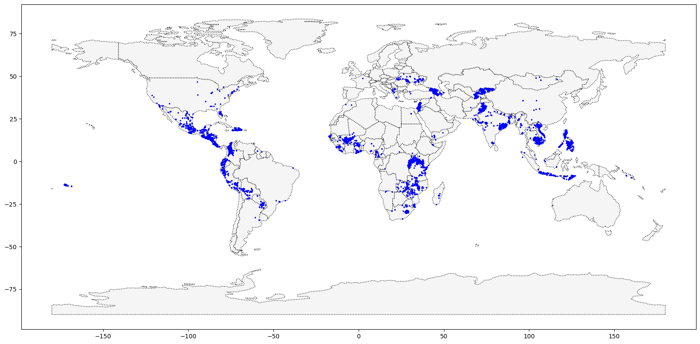

이 페이지는 위의 코드를 chat-gpt를 이용하여 한국어로 번역하고 문제풀이를 했다. 원문이 궁금하다면 위의 링크를 이용하길 바란다.
Introduction
Kiva.org는 전 세계의 가난한 사람들에게 금융 서비스를 제공하는 온라인 크라우드펀딩 플랫폼입니다. Kiva 대출자들은 2백만 명 이상에게 10억 달러 이상의 대출을 제공했습니다.
Kiva는 “필드 파트너”라는 글로벌 네트워크를 통해 세계에서 가장 외지에 위치한 지역에까지 도달합니다. 이들 파트너는 대출자를 검증하고 서비스를 제공하며 대출을 관리하는 지역 단체입니다. 이번 연습에서는 필리핀에서의 Kiva 대출을 조사할 것입니다. Kiva의 현재 네트워크 범위를 벗어나는 지역을 파악하여 새로운 필드 파트너 모집 기회를 식별할 수 있는지 확인해보세요. 시작하려면 아래 코드 셀을 실행하여 피드백 시스템을 설정하세요.
import geopandas as gpd#from learntools.core import binder# binder.bind(globals())# from learntools.geospatial.ex1 import *
#binder.bind(globals())
# from learntools.geospatial.ex1 import *
1) 데이터 가져오기.
다음 셀을 사용하여 loans_filepath에서 로드된 shapefile을 사용하여 GeoDataFrame world_loans를 생성하세요.
from google.colab import drivedrive.mount('/content/drive')
Mounted at /content/drive
loans_filepath ="/content/drive/MyDrive/2023 데이터마이닝/dataset/kiva_loans/kiva_loans.shp"# Your code here: Load the dataworld_loans = gpd.read_file(loans_filepath)# Uncomment to view the first five rows of the dataworld_loans.head()
Partner ID
Field Part
sector
Loan Theme
country
amount
geometry
0
9
KREDIT Microfinance Institution
General Financial Inclusion
Higher Education
Cambodia
450
POINT (102.89751 13.66726)
1
9
KREDIT Microfinance Institution
General Financial Inclusion
Vulnerable Populations
Cambodia
20275
POINT (102.98962 13.02870)
2
9
KREDIT Microfinance Institution
General Financial Inclusion
Higher Education
Cambodia
9150
POINT (102.98962 13.02870)
3
9
KREDIT Microfinance Institution
General Financial Inclusion
Vulnerable Populations
Cambodia
604950
POINT (105.31312 12.09829)
4
9
KREDIT Microfinance Institution
General Financial Inclusion
Sanitation
Cambodia
275
POINT (105.31312 12.09829)
2) 데이터 시각화하기.
다음 코드 셀을 수정하지 않고 실행하여 국가 경계를 포함하는 world GeoDataFrame을 로드하세요.
# This dataset is provided in GeoPandasworld_filepath = gpd.datasets.get_path('naturalearth_lowres')world = gpd.read_file(world_filepath)world.head()
pop_est
continent
name
iso_a3
gdp_md_est
geometry
0
889953.0
Oceania
Fiji
FJI
5496
MULTIPOLYGON (((180.00000 -16.06713, 180.00000...
1
58005463.0
Africa
Tanzania
TZA
63177
POLYGON ((33.90371 -0.95000, 34.07262 -1.05982...
2
603253.0
Africa
W. Sahara
ESH
907
POLYGON ((-8.66559 27.65643, -8.66512 27.58948...
3
37589262.0
North America
Canada
CAN
1736425
MULTIPOLYGON (((-122.84000 49.00000, -122.9742...
4
328239523.0
North America
United States of America
USA
21433226
MULTIPOLYGON (((-122.84000 49.00000, -120.0000...
world와 world_loans GeoDataFrame을 사용하여 전 세계 Kiva 대출 위치를 시각화하세요.
# Define a base map with county boundariesax = world.plot(figsize=(20,20), color='whitesmoke', linestyle=':', edgecolor='black')# Add wild lands, campsites, and foot trails to the base mapworld_loans.plot(color='blue', ax=ax, markersize=2)
<Axes: >

3) 필리핀을 기반으로 하는 대출 선택하기.
이제 필리핀에 기반을 둔 대출에 초점을 맞출 것입니다. 다음 코드 셀을 사용하여 필리핀에 기반을 둔 대출이 포함된 world_loans의 모든 행을 포함하는 GeoDataFrame인 PHL_loans을 만드세요.
world_loans
Partner ID
Field Part
sector
Loan Theme
country
amount
geometry
0
9
KREDIT Microfinance Institution
General Financial Inclusion
Higher Education
Cambodia
450
POINT (102.89751 13.66726)
1
9
KREDIT Microfinance Institution
General Financial Inclusion
Vulnerable Populations
Cambodia
20275
POINT (102.98962 13.02870)
2
9
KREDIT Microfinance Institution
General Financial Inclusion
Higher Education
Cambodia
9150
POINT (102.98962 13.02870)
3
9
KREDIT Microfinance Institution
General Financial Inclusion
Vulnerable Populations
Cambodia
604950
POINT (105.31312 12.09829)
4
9
KREDIT Microfinance Institution
General Financial Inclusion
Sanitation
Cambodia
275
POINT (105.31312 12.09829)
...
...
...
...
...
...
...
...
13657
539
N/A, direct to Sevamob
DSE Direct
Health
South Africa
50000
POINT (29.60355 -25.94599)
13658
540
N/A, direct to Sanergy
DSE Direct
Water and Sanitation
Kenya
50000
POINT (36.82195 -1.29207)
13659
542
N/A direct to BioLite Inc.
DSE Direct
Clean Cookstove
Uganda
50000
POINT (32.58252 0.34760)
13660
543
N/A direct to LegWorks Inc.
DSE Direct
Health
Canada
50000
POINT (-79.38318 43.65323)
13661
545
N/A, direct to Solar Home
DSE Direct
Solar Home Systems
Myanmar (Burma)
50000
POINT (96.19513 16.86607)
13662 rows × 7 columns
# Your code herePHL_loans = world_loans.loc[world_loans.country=='Philippines'].copy()PHL_loans.head()
Partner ID
Field Part
sector
Loan Theme
country
amount
geometry
2859
123
Alalay sa Kaunlaran (ASKI)
General Financial Inclusion
General
Philippines
400
POINT (121.73961 17.64228)
2860
123
Alalay sa Kaunlaran (ASKI)
General Financial Inclusion
General
Philippines
400
POINT (121.74169 17.63235)
2861
123
Alalay sa Kaunlaran (ASKI)
General Financial Inclusion
General
Philippines
400
POINT (121.46667 16.60000)
2862
123
Alalay sa Kaunlaran (ASKI)
General Financial Inclusion
General
Philippines
6050
POINT (121.73333 17.83333)
2863
123
Alalay sa Kaunlaran (ASKI)
General Financial Inclusion
General
Philippines
625
POINT (121.51800 16.72368)
4) 필리핀의 대출 이해하기.
필리핀의 대출 이해하기. 다음 코드 셀을 수정하지 않고 실행하여 필리핀의 모든 섬의 경계를 포함하는 PHL GeoDataFrame을 로드하세요.
# Load a KML file containing island boundariesgpd.io.file.fiona.drvsupport.supported_drivers['KML'] ='rw'PHL = gpd.read_file("/content/drive/MyDrive/2023 데이터마이닝/dataset/Philippines_AL258.kml", driver='KML')PHL.head()
Name
Description
geometry
0
Autonomous Region in Muslim Mindanao
MULTIPOLYGON (((119.46690 4.58718, 119.46653 4...
1
Bicol Region
MULTIPOLYGON (((124.04577 11.57862, 124.04594 ...
2
Cagayan Valley
MULTIPOLYGON (((122.51581 17.04436, 122.51568 ...
3
Calabarzon
MULTIPOLYGON (((120.49202 14.05403, 120.49201 ...
4
Caraga
MULTIPOLYGON (((126.45401 8.24400, 126.45407 8...
PHL과 PHL_loans GeoDataFrame을 사용하여 필리핀의 대출을 시각화하세요.
어떤 섬에서 새로운 필드 파트너를 모집하는 것이 유용할지 식별할 수 있나요?
Kiva의 도달 범위를 벗어나 보이는 섬이 있나요?
이 질문에 대한 답변을 찾는 데 이 맵이 유용할 수 있습니다.
사각화 된 데이터를 보고 위의 문제에 대한 답을 하자면 내 생각은 다음과 같다.
대출 받은 사람을 관리하는 파트너를 모집하는 것이라면 당연히 점이 많이 찍힌 섬들로 가야겠지만. (아마도 이 문제에선 이걸 원하는 것은 아닐것이다.)
아직 대출을 받지 않은 사람들 중에서 대출을 받고자하는 사람들을 찾는 관리자를 원한다면 점이 찍히지 않은 빈 섬으로 가야겠지…
다만 빈 섬들중에서 어떤 섬이 인구가 많은가(가능하면 대출을 원하는 인구가 많아야함) 를 추가적으로 탐색하는게 좋아보이는데 이는 인구수도 같이 찍어보면 좋지 않을까..?
추가적으로 해당 지역의 평균 소득도 데이터가 있다면 같이 살펴보면 좋을듯하다.
이를 한줄로 정리하자면
필리핀 중앙의 mindoro 섬이나 남쪽의 큰 섬을 공략해보는게 좋을듯 하다.